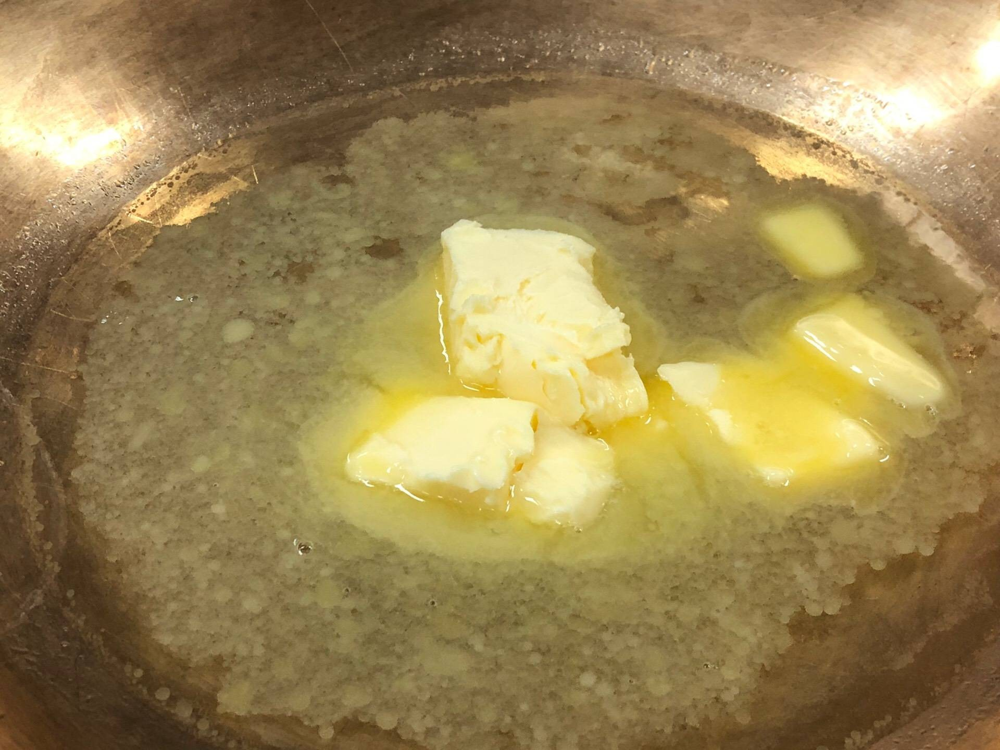
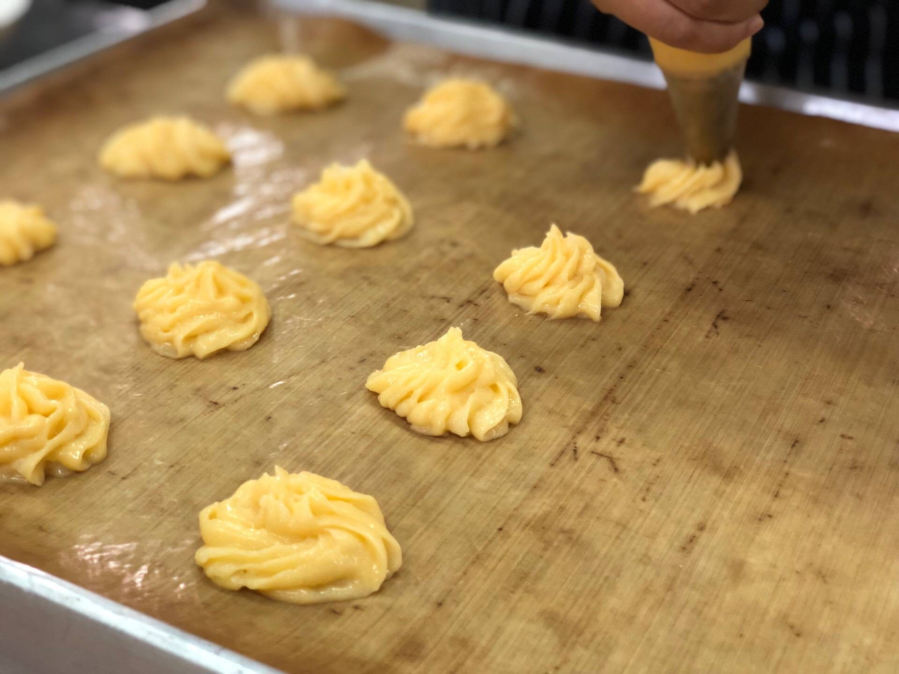
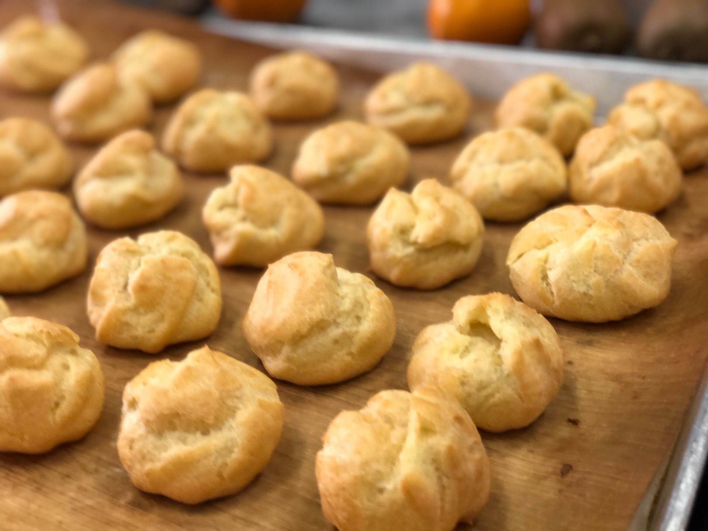
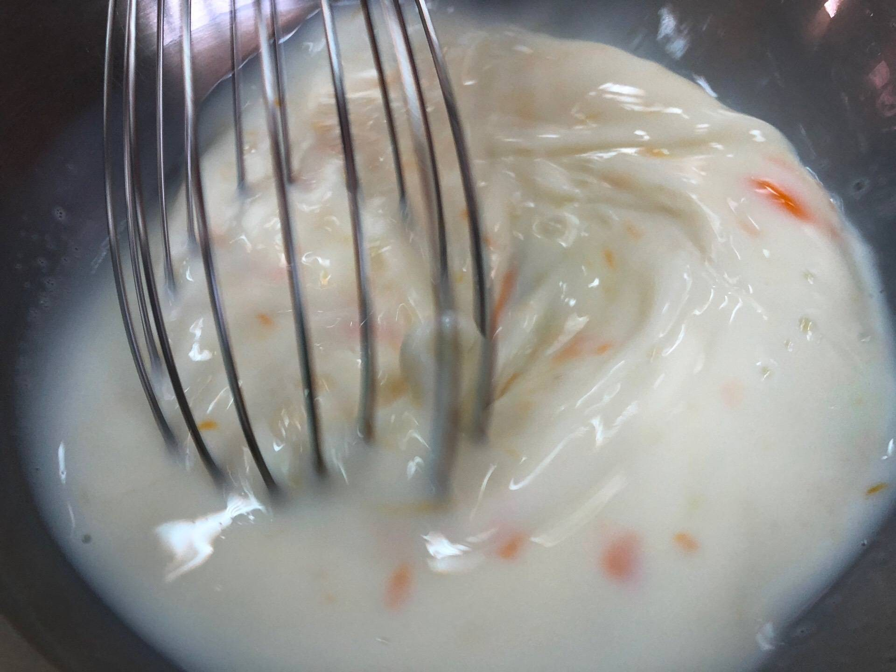
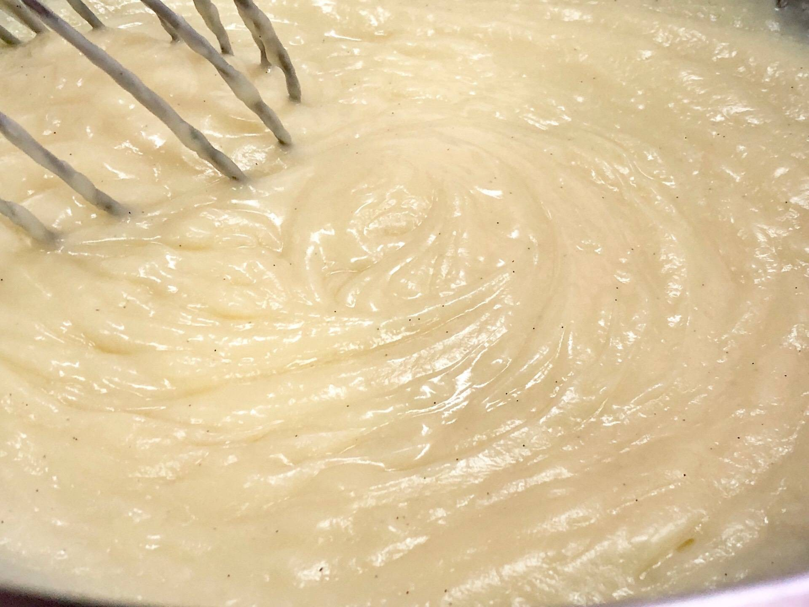
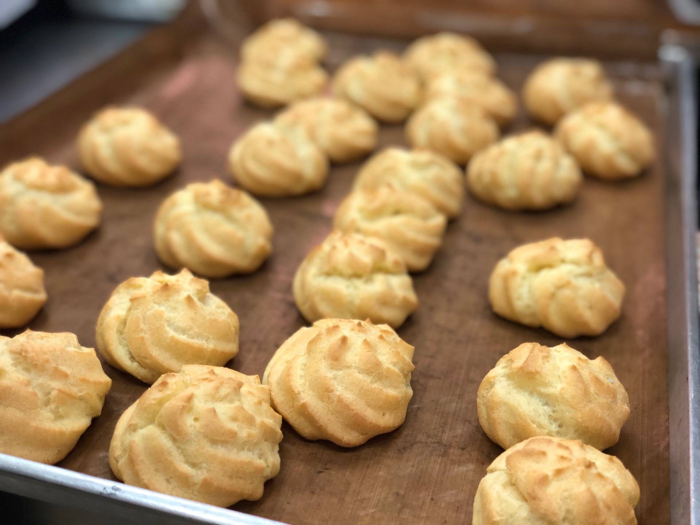

1.ใส่น้ำและเนย ตั้งไฟพอเดือด ให้เนยละลาย
2.ใส่แป้งทีเดียว คนเร็วๆจนแป้งร่อนเป็นก้อน ไม่ติดกระทะ ยกลงไปใส่ในเครื่องตี
3. ค่อยๆใส่ไข่ลงไปทีละฟอง ไม่ต้องรอให้แป้งอุ่น ให้ไข่เข้ากันดีกับแป้ง
จึงใส่ไข่ฟองที่ 2 ทำแบบนี้จนครบ 5 ฟอง
4.ตักแป้งใส่ถุงบีบ ใช้หัวบีบรูปดาวหรือเม็ดมะยม
บีบลงในถาดที่ทาเนยหรือใช้แผ่นรองอบ ระยะห่าง 3 ซม.


5.นำเข้าเตาอบอุณหภูมิ 190 องศาเซลเซียส ประมาณ 20 นาที
นำออกจากเตาแซะวางบนตะแกรงจนเย็น
6.ผสมแป้งข้าวโพด นมผง เกลือ น้ำตาลทรายเข้าด้วยกัน

7.ผสมนมสดกับไข่ให้เข้ากัน
8.เทใส่ในแป้ง ผสมให้เข้ากัน
9.ใส่หม้อต้มน้ำ นำภาชนะที่ใส่ส่วนผสมวางด้านบนผสมให้เข้ากันสักครู่
ตามด้วยเนยสด คนให้ละลายเป็นเนื้อเดียวกันพอข้น
10.ใส่วนิลาลงไป คนเร็วๆให้เข้ากัน


11.บีบไส้เป็นขั้นตอนสุดท้าย ก่อนที่จะทาน
ต้องรอให้ความชื้นจากไส้ได้ซึมเข้าไปสู่ตัวแป้งก่อน